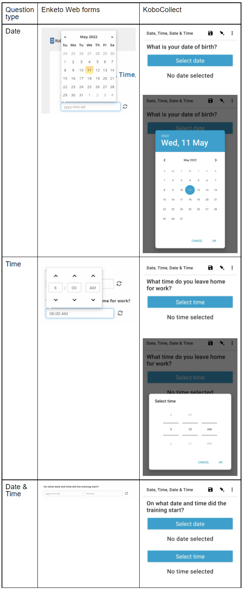
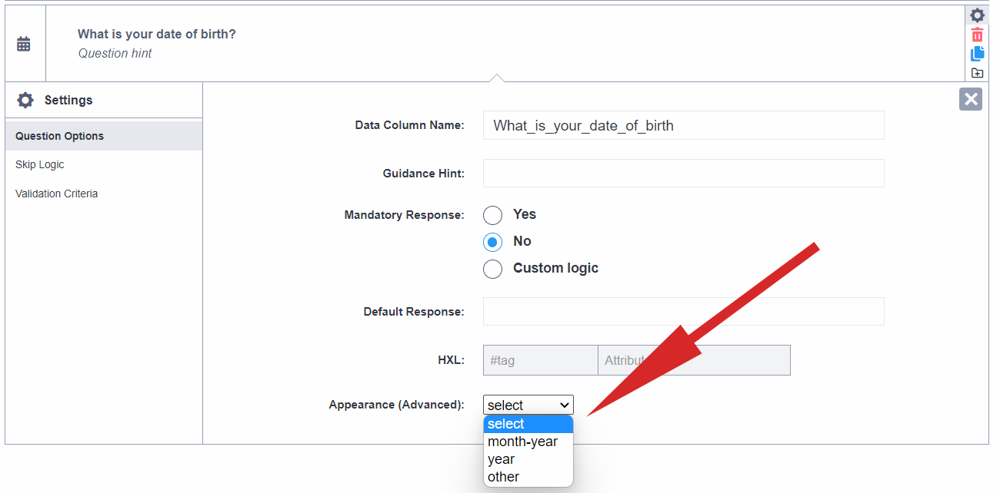

What do you need help with?
Search the knowledge base, browse our resources and visit our forum for more detail information
Search the knowledge base, browse our resources and visit our forum for more detail information
Last updated: 20 Jun 2022
There are 3 different date and time question types in KoboToolbox: “Date”, “Time” and “Date and time”.
The “Date” question type is for capturing date values, for example when asking for date of birth, etc. In both KoboCollect and Enketo web forms, a calendar-style date picker will be shown for selecting the date.
The “Time” question type is for capturing time values, for example on a question like “At what time do you leave for work?” In both KoboCollect and Enketo, a time picker is shown where a user can select their response.
The third type “Date and time” is for capturing both date and time responses on a single question.
Adding “Date”, “Time”, and “Date and Time” questions is simple:
In the formbuilder, click the button to add a new question
Type the question text, for example “What is your date of birth?”, then click ADD QUESTION or press ENTER on your keyboard
Choose the question type

To add “Date”, “Time”, and “Date and Time” questions in the XLSForm, use the
date, time and dateTime question types as shown in the example below:
In XLSForm, you can set up the following:
type |
name |
label |
|---|---|---|
date |
dob |
On what date were you born? |
time |
time |
At what time do you you leave for work? |
dateTime |
date_time |
At what date and time did the training start? |
survey |

When adding the “Date” question type in the formbuilder, you can choose from a number of display options (under the question settings). Appearances change the way the question is displayed on web forms and on KoboCollect.
For the “Date” question type, you can control how the default Gregorian calendar displays by choosing between the options “month-year”, “year” and “no-calendar”. Apart from these options, you can also change the calendar style to supported non-Gregorian calendars.

To add appearance values that are not listed on the drop-down list in the formbuilder, choose “other”, and type the appearance value in the text field that appears.

* These options must be entered manually in the formbuilder after “other” is selected.
You can specify advanced appearances in XLSForm through the appearance column as follows:
type |
name |
label |
appearance |
|---|---|---|---|
date |
rains_start |
When did the planting rains start? |
month-year |
date |
year_migrate |
In which year did you migrate? |
year |
date |
no-calendar_date |
Date picker without calendar |
no-calendar |
survey |
type |
name |
label |
appearance |
|---|---|---|---|
date |
coptic_date |
Date picker with Coptic calendar |
coptic |
date |
ethiopian_date |
Date picker with Ethiopian calendar |
ethiopian |
date |
islamic_date |
Date picker with Islamic calendar |
islamic |
date |
bikhram_sambat_date |
Date picker with Bikram Sambat calendar |
bikhram_sambat |
date |
myanmar_date |
Date picker with Myanmar calendar |
myanmar |
date |
persian_date |
Date picker with Persian calendar |
persian |
survey |
When defining custom skip logic (relevant), validation criteria (constraint),
and mandatory response criteria (required) using XLSForm code, date values
should be included
using the date() function,
and in the format “YYYY-MM-DD”. For example, if you are creating validation
criteria on a date question so that all survey responses must be before the date
“April 10th, 2022”, your validation logic will be . < date('2022-04-11').
To use “Time” questions in XLSForm logic, it is always a good idea to convert
the raw time values into a number representing time as a fraction of a day,
called the decimal time. You can do this using
the decimal-time() function.
Then, you can compare this value with another decimal time value. For example,
if you would like to limit the time entered on a question to only after 12 noon,
you can define the following custom validation logic decimal-time(.)>=0.5.
Learn more about related topics:
Date and time functions (ODK documentation)
You can download the example XLSForm here .
Did you find what you were looking for? Was the information clear? Was anything missing?
Share your feedback to help us improve this article!